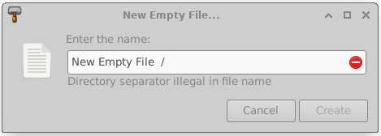
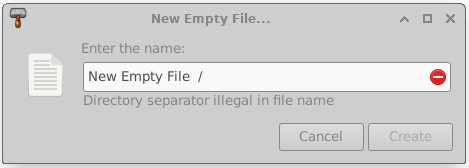
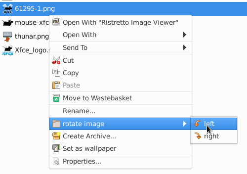
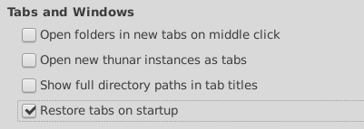
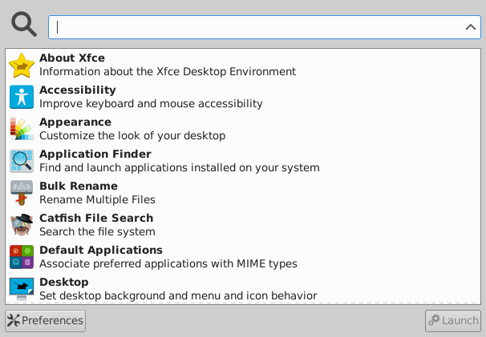

Dec 15,2022
Xfce 4.18 released
After almost two years of work, we are happy to announce the release of Xfce 4.18 !
Since Xfce 4.16 a lot of major development happened. Our team added multiple nice new features, did a gazillion of bug fixes and did various minor improvements. Finally, all that is going to be released for your pleasure.
This development cycle was influenced a lot by GSoC 2021 and GSoC 2022, which led to various new features, most of them for Thunar, the Xfce File Manager. Though as well multiple other Xfce components got a lot of love and many improvements were done under the hood.
Assuming you have installed Xfce 4.16, here is an overview on the major changes you will see on an upgrade to Xfce 4.18:
libxfce4ui
XfceFilenameInput
XfceFilenameInput is a comfortable widget for filename input, which was added in order to prevent invalid filenames at an early stage and to give detailed feedback on the concrete problem.
 

XfceShortcutsEditor
This widget is a shortcut editor which was introduced in order to have a graphical interface to modify component-specific shortcuts. Currently, it is only used inside Thunar, Xfce4-terminal and Mousepad, though other components might follow.
tumbler
Some performance improvements for the pixbuf-thumbnailer and the scheduler were done. As well now there are multiple overwrite options for the desktop-thumbnailer.
There is now support for the thumbnail sizes x-large and xx-large, which are very useful for high resolution displays.
Tumbler and Thunar now support shared thumbnail repositories, like described in the freedesktop.org thumbnail specification. This feature can be used to produce thumbnails for a folder in advance, directly located near the pictures. Like that, the thumbnails don't need to be re-generated for each individual user.
For more information on shared thumbnails, check the related blog post.
xfce4-panel
The DateTime and the Clock plugin provided overlapping functionallity. In order to prevent parallel development, they have been merged into a single plugin.

The new Clock plugin received a new binary time mode now and provides a sleep monitor. Here's a screenshot of all possible layouts which are: Analog, Binary, Digital, Fuzzy and LCD.

xfdesktop
Like in thunar, the "Delete" menu entry in the context menu can now be hidden.
In order to don't mess the desktop by accident on pressing 'rearrange desktop icons', the user is asked for confirmation now.
xfce4-settings
The search entry for xfce4-settings-manager was a bit simplified. Now it will always be shown, without any slider or button.

xfce4-display-settings
xfce4-display-settings got some minor improvements and the possibility to decide what to do when new displays are connected.
xfce4-appearance-settings
On selecting a new theme, there is now the option to automatically set a matching xfwm4 theme, if available.

xfce4-settings-editor
It is now possible to find specific settings quickly by using the new search widget.

thunar
List View
For directories, the count of containing files can now be displayed in the size column. It is now possible to add a 'file creation date' column, and the 'configure columns' dialog can be opened with a right-click on any column head.

Image Preview
Finally, an image preview side pane has been added to Thunar. No, wait, actually two of them! You can choose to either use the 'embedded' mode which will take no extra space, but hide parts of the left side pane. Or you can go for the 'standalone' mode, which will use a separate pane on the right and display as well some basic information.
Undo and Redo
It is now possible to undo basic file operations and to redo them. Undo and Redo can be used for 'move', 'rename', 'trash', 'link' and 'create' operations. Per default, a history of the last 10 operations is stored, though the history length is configurable. Whenever an Undo/Redo is triggered, a notification with few details will be shown.

File Highlight
Files now can be highlighted by setting the background and the filename to different colors. This can be done via an additional tab, located in the 'properties' dialog. The view menu provides a checkbox in order to enable/disable the feature. Once enabled, files now can be shown in all the colors of the rainbow.


For more information on file highlight, check the related blog post.
Toolbar
It is now possible to customize the toolbar according to your personal needs! An additional dialog has been added for that purpose, on which the visibility and position of specific items can be managed. As well custom actions, which appear for folders can be used in the toolbar.
When the menubar is hidden, an additional toolbar button which can be used to show the menu will be displayed.


For more information on the configurable toolbar, check the related blog post.
Split View
Thunar now provides the option to use split panes. The pane separator can be moved, and its position will be stored. Via a xfconf setting, it is as well possible to have a vertical split.

Statusbar
The status bar style was tweaked and '|' is now used to separate entries. Furthermore, it is now possible to customize it by using the context menu.

Recursive Search
Thunar has now the possibility to search recursively, dircetly inside Thunar itself. The search is done in a separate thread and search results are added rapidly into a List View. A new row 'Location' shows where the search results are located, and the context menu provides the option 'Open Item Location' in order to travel there quickly. The preferences dialog provides an option to limit recursive search to local folders, or to disable it.


For more information on the recursive search feature, check the related blog post.
Recent
Recently used files now can be accessed in the side pane. Like for the 'Recursive Search' feature, the new 'Location' row can be used in List View. Additionally, for 'Recent' a new row 'Recency' can be added to sort the files by their latest usage.

For more information on 'Recent' in Thunar check the related blog post.
Bookmark Menu
In order to keep the 'Go' menu compact, bookmarks have been moved into a separate, new 'Bookmarks' menu. The menu item 'add Bookmark' was rather hidden in the 'send to' menu in Thunar 4.16. As part of the new 'Bookmarks' menu, it is more prominent now.

Trash directory
With the new release, the trash directory provides an info bar which gives easy access to `Empty Trash` and 'Restore' functionality. When using List View, a 'Date Deleted' column will be shown, so that the files can be sorted by deletion date. Via context menu, it is now possible to select 'Restore and Show' in order to automatically open a new tab in the folder of the restored file(s).
Default Applications
The management to set/unset default applications for specific mime types was improved. The context menu got a dedicated item 'Set Default Application' which will open the 'ApplicationChooserDialog' with 'use as default' preselected. The dialog now has a section 'Default Application' in order to make clear which default application currently is set. If you want to remove applications from the list, right click it and select 'forget association'.

Custom Actions
It is now possible to arrange custom actions in cascading submenus. Just enter the same submenu name for a custom action in order to place it into the same menu. If you require multiple menu levels, you can achieve that by using '/' in the path of the 'Submenu' entry.
Preferences
The thumbnail settings in the preferences dialog got grouped together, and meanwhile it is possible to limit the file size for which thumbnails should be generated. That should mitigate possible performance issues by preventing thumbnail generation for huge video files.

File transfer operations optionally can use *.partial~ as an intermediate file now. After a transfer operation, there is now the option to verify the file checksums in order to make sure that no single bit got corrupted. Note that the checksum feature will require some extra time during copy when activated.

For more information on the new file transfer options, check the related blog post.
A checkbox was added in order to allow running shell scripts. In Thunar 4.16 it only was possible to change that behavior by changing a hidden setting. Use that option with caution!

There is now the possibility to restore tabs on startup, and to show the full directory path in the tab title.
xfce4-appfinder
Configuration
Appfinder got support for the 'PrefersNonDefaultGPU' property, which is useful for systems with hybrid graphic cards.
Environment variables are now parsed when passed in collapsed mode.
Appearance
An option to hide the window decorations was added.
xfwm4
Workspaces
Workspace setting will now work as well with other window managers.
Compositor
The compositor now supports adaptive vsync with GLX.
General
Scaling
Improved support for UI scaling and fix for many blurry icons in the core components when scaling is used. This will be particularly useful for Hi DPI screens.
Window Header Bars
All header bars of Xfce Windows/Dialogs by default will be drawn by the window manager now (Xfwm4). Some dialogs optionally support 'GtkHeaderBar' (CSD) which can be enabled via a xfconf setting.

For the sake of readability, this list only shows main highlights. Check the full Xfce 4.18 changelog for a detailed list of changes.
This summary can as well be viewed as a localized online tour.
This release can be downloaded here, either as a set of individual packages or as a single tarball including all these individual versions.
Best regards,
The Xfce development team
page sources | © 2022 Alexander Schwinn